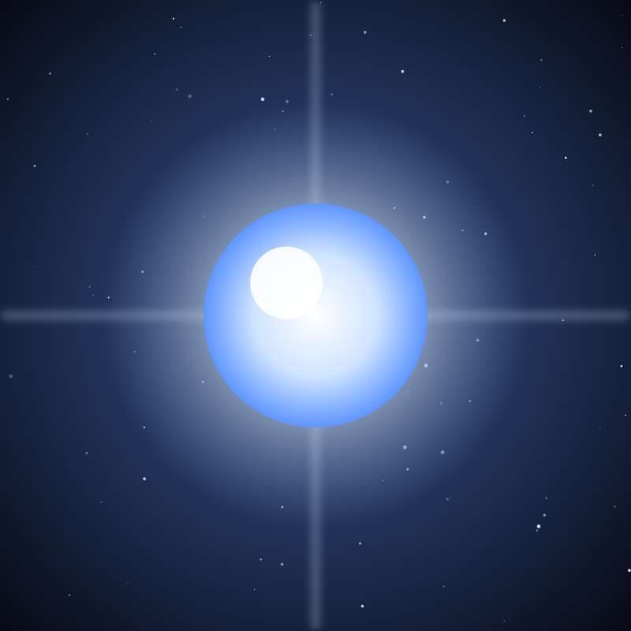

Star
Rigel
A blue supergiant marking the foot of Orion, shining roughly 120,000 times brighter than the Sun.
Object 20 of 26

Key facts
- Distance
- ~860 light-years
- Radius
- 78.9 × Sun
- Mass
- ~21 × Sun
- Spectral type
- B8 Ia (blue supergiant)
- Surface temperature
- 12,100 K
- Luminosity
- ~120,000 × Sun
- Age
- ~8 million years
- Constellation
- Orion
Overview
Rigel is a blue supergiant marking the foot of Orion, and the seventh-brightest star in the sky. Despite its cool-sounding name it is fiercely hot: its surface glows at about 12,100 K, nearly twice the temperature of the Sun.
Its light is a striking blue-white, a sharp contrast with the red shoulder of Betelgeuse on the opposite side of the constellation. At 860 light-years away Rigel is more distant than Betelgeuse but far more luminous, which is why the two appear comparable in brightness.
A Life in the Fast Lane
Rigel packs about 21 solar masses into a single star, and massive stars burn through their fuel quickly. It has existed for only about 8 million years — a blink compared with the Sun's 4.6 billion — yet it is already nearing the end of its life.
It radiates roughly 120,000 times the Sun's energy, most of it as ultraviolet light. When it runs out of fuel it will collapse and explode as a supernova, seeding the galaxy with the heavy elements that future stars and planets are built from.
A Multiple Star
Rigel is not a single point of light but a system. The bright primary is occasionally eclipsed by a close companion, and two fainter stars lie farther out, making at least four bodies in the system.
The primary itself pulsates irregularly, varying in brightness by a few hundredths of a magnitude over periods of weeks. It is classified as a Beta Cephei-type variable, a class of hot massive stars that pulse as the opacity of their interiors changes.
In the Constellation Orion
Rigel sits at Orion's lower left, opposite Betelgeuse at the shoulder. The two stars are not physically associated — they only look like a pair from Earth — and their colour difference makes Orion one of the most striking constellations in the sky.
Rigel's position at the hunter's foot has made it a landmark in star charts for centuries, and its brightness makes it an easy naked-eye target from almost anywhere on Earth.